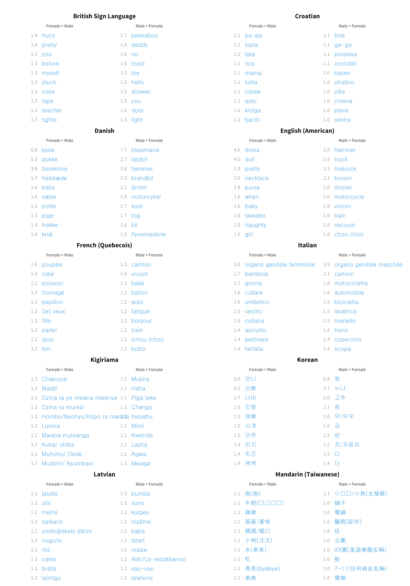
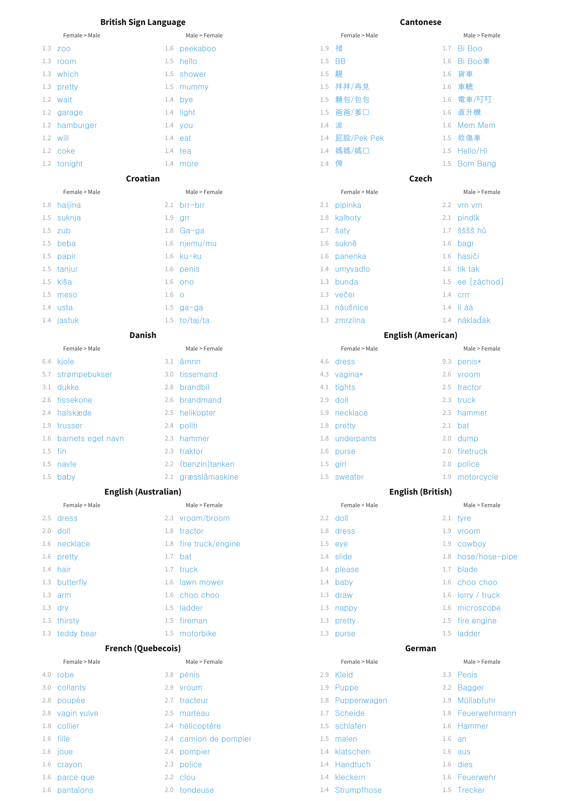
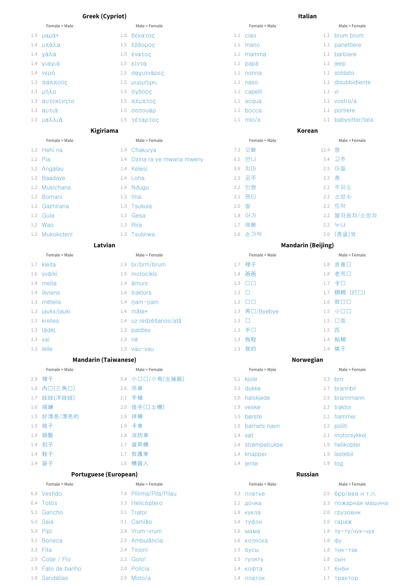
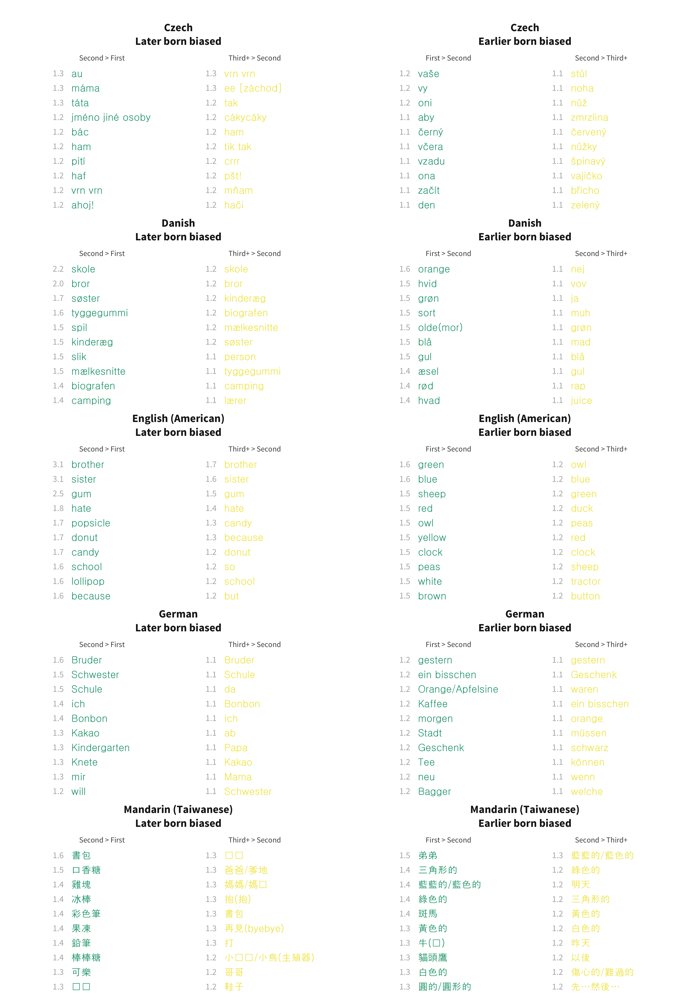

Chapter 9 Demographic Variation in Individual Words
- Note:
- The analyses below were presented at the 2019 Biennial Meeting of the Society for Research in Child Development; an earlier version of the sex analyses was presented at the Boston University Conference on Language Development in 2016.
In Chapter 6, we documented demographic differences in total vocabulary size. But where do these differences come from? Concretely, if girls say more words than boys, which words do they say more frequently? Is it the case that they are simply more likely to be producing each word with some relatively uniform probability, or are there individual words that they are much more likely to produce? In this chapter, we consider the possibility that the probability of comprehending or producing individual words is related to demographic variables. We assess which words are learned differentially earlier or later by girls vs. boys, by first-born vs. later-born children, and by children with different levels of maternal education.
9.1 Methods
9.1.1 Data
As reviewed in Chapter 3, subsets of the datasets in Wordbank are coded for one or more demographic variables. Here as in previous analyses, we examine three: birth order, level of maternal education, and sex. For these analyses, we extract all of the instruments with demographically coded data and combine them into two datasets: comprehension from WG forms, and production across both WG and WS forms (using the “by item stitching” approach described in Appendix C). To avoid sparsity, we coded demographic variables are coded into the values First / Second / Third+ for birth order, Below Secondary / Secondary / College and Above for maternal education, and Female / Male for assigned sex at birth. This approach creates six different analyses, one for each combination of measure (comprehension/production) demographic variable. We exclude a language from a given analysis if it has fewer than 50 children for each level of that demographic variable.
Each dataset yields a trajectory for each word, created by fitting a logistic curve to the proportion of children that are reported to understand or produce the word over age. These trajectories can be computed separately for each value of the demographic variable. For example, Figure 9.1 illustrates the trajectories for some sample items in English for production data split by birth order. Note that the word brother is spoken much earlier by second-born and third-born children than by first-born children, while green is spoken much earlier by first-born children. And the word dog is produced only slightly earlier by first-born or second-born children than by later-born children. Averaging all of these trajectories together reproduces the demographic vocabulary curves reported in Chapter 6.
Figure 9.1: Developmental trajectories for the production of three example American English words by birth order.
9.1.2 Models
There are a number of complementary methods to estimate individual item effects of the type visualized in Figure 9.1. In Chapter 6, we explored relatively model-free approaches to estimating demographic effects across groups mostly using descriptive statistics. Here we are interested in estimating these effects for individual items, and data are sparser for each individual item. Thus, estimating an independent statistic for each item would be noisier and more variable. In exploring this issue, we found that it was much more effective to reduce this variance by using a model in which demographic effects are estimated simultaneously at the level of all items and specifically for individual items.
In particular, in the analysis below we use mixed-effects logistic regression to predict whether children understand or produce each item based on their age and their level of a single demographic variable, with random effects of age and demographic variable by item. A model of this type is fit separately to the data for each language and demographic measure, for example specified for birth order as:
produces ~ age + birth_order + (age + birth_order | item)For each demographic variable, we specify the contrasts such that their coefficient compares each level of the variable to the previous level. For example, the coefficients for birth order reflect the overall difference between first-born children as compared to second-born children and the overall difference between second-born children as compared to later-born children. Our key coefficients of interests are the fitted slopes for each demographic group and item. These indicate the size of the demographic differences for that item, over and above the main effect.
Since these effects are coefficients in a logistic regression, they represent the odds ratio between the demographic levels they are comparing. For example, the birth order model yields the odds ratio between first-born and second-born children and the odds ratio between second-born children and later-born children. Thus an effect of 1 indicates no difference (e.g., first-born and second-born children are equally likely to know a word). An effect greater than 1 indicates an advantage for first-born children (e.g., an effect of 2 would mean that the odds of first-born children knowing a word are twice that of second-born children). Conversely, an effect lower than 1 indicates an advantage for second-born children (e.g. an effect of 0.5 would mean that the odds of first-born children knowing a word are half that of second-born children).
9.2 Results
As discussed above, the primary target of our analysis is the item random effects for each demographic variable, indicating our best estimate of the specific effect of a particular demographic on a particular item. TThe first question we address is the distribution of these random effects. Figure 9.2 shows the distribution of demographic random effects across all languages and measures, using a quantile-quantile (QQ) plot. Points on a diagonal line indicate conformity to the standard normal distribution, while deviations suggest differences in distributional form.
The resulting plots show a broad, low-slope diagonal with skewed tails. The majority of coefficients are within a very tight range: 95% of the item effects (across all languages, measures, and demographic factors) are within (0.74, 1.31), i.e. the odds for a child in one demographic group knowing the word are not more than 1.3 times higher than for another group, for 95% of words. Most of the action is in the tails of the distribution: a few words vary much more in how often they are produced according to some demographic feature.

Figure 9.2: Quantiles of item random effects compared to theoretical quantiles of a normal distribution, for both production and comprehension.
In the following subsections, we examine these coefficients. For each demographic factor, we first give the fixed effects of the demographic levels, and then show the distribution of item random effects and the top 10 largest effects in each direction. It is these extreme items that we are most interested in.
9.2.1 Sex
As shown in Chapter 6 and reflected here in Figure 9.3, there is a highly consistent advantage for girls in language production. This advantage is slightly less pronounced for comprehension but still present. Independently of this advantage, we also see specific items emerge as understood differentially for boys or girls.
Figure 9.3: Main effect of sex for each language and measure.
Figure 9.4 gives the full distribution of item effects for comprehension, and Figure 9.5 shows the top 10 items most biased in each direction, in each languages. These are almost exclusively traditionally gendered items of clothing and toys, plus genital words. For English, for example, the words with a substantial male advantage are mostly vehicle- and tool-related, while the female advantage words are mostly clothing. Thus, our first impression is that most of these tend to be specific content items associated with gendered play.
Figure 9.4: Distribution of sex item random effects for comprehension data in each language.

Figure 9.5: Top 10 most sex biased words in each language for comprehension data.
Figures 9.6 and 9.7 give the same measures for production. There are considerably more words per language with large sex biases (at least 1.5 times higher in either direction) for production (mean across languages 2.62%) than for comprehension (mean across languages 1.61%). The content of these sex biased words is extremely similar across languages. For English, we again see the largest biases in each direction for genital terms, the largest male biases for vehicles and objects associated with traditionally male activities (e.g., sports), and the largest female biases for female-coded clothing and toys. This pattern is replicated quite robustly across languages.
Figure 9.6: Distribution of sex item random effects for production data in each language.


Figure 9.7: Top 10 most sex biased words in each language for production data.
In sum, there appear to be two different processes at work in the sex effects we observe. The first is a general shift in the probability that any word will be produced or understood such that girls are slightly more likely to produce or understand it than boys. The average magnitude of this fixed effect across languages is 1.2 for comprehension and 1.5 for production. In other words, if a male child had a 50% chance of saying a word (odds 1:1), a female child would on average have 1.5 times higher odds of saying it, i.e. a 60% chance. However, beyond this fixed effect, there are also variable effects for individual words. Most of these effects are small, but a few of them are quite large. For example, if an English-speaking male child has a 50% chance of saying the word dress, a female child would have a 82% chance; if a female child has a 50% chance of saying the word hammer, a male child would have a 70% chance.
9.2.2 Birth order
We next consider individual items that are more or less likely in the vocabularies of first-born vs. later-born children. Here we consider both the contrast between second-born and first-born children as well as between later-born and second-born children. As shown in Figure 9.8, across languages, second-born children are advantaged over later-born children in both comprehension and production, while first-born children are advantaged above second-born children in production. Somewhat surprisingly, across languages the reverse is true of comprehension – later-born children have somewhat bigger comprehension vocabulary. We can only speculate as to the source of this pattern, especially since it is not present in the production data. The number of languages for which we have birth order data is small, so conclusions are somewhat tentative.
Figure 9.8: Main effect of birth order for each language and measure.
Figures 9.9 and 9.10 again represent random effects coefficients for particular items in comprehension. In general, there are few surprises here: the words for brother and sister are much more likely for second-born children to understand, and even more likely for later-born children.19 Several languages additionally show a few other words that second-born and later-born children might be more likely to be exposed to via their siblings, such as school in English and Norwegian (skole).
Figure 9.9: Distribution of birth order item random effects for comprehension data in each language.
Figure 9.10: Top 10 most birth order biased words in each language for comprehension data.
The same general patterns are present in the production data (Figures 9.11 and 9.12), with additional evidence that having elder siblings appears to be related exposure to sweets, at least in some cultures: popsicle, donut, and candy all appear in the English data, and tyggegummi (gum) and several soda- and candy-related words appear in the Norwegian data. Hate also appears in the English data, suggesting some emotional expressions due to having a sibling. We interpret this pattern with caution, however, as birth order is likely partially confounded with socioeconomic status, in that families from lower socioeconomic status populations tend to have more children (Huber, Bookstein, and Fieder 2010). So later-born children might also be more likely to come from low-SES families, who have more environmental exposure to “junk foods” like soda and candy [Ghosh-Dastidar et al. (2014); see below].
Figure 9.11: Distribution of birth order item random effects for production data in each language.

Figure 9.12: Top 10 most birth order biased words in each language for production data.
In sum, across languages, a given word has lower odds of being understood by a first-born child than a second-born child (by 0.9) and higher odds of being understood by a second-born child than a later-born child (by 1.2). It also has higher odds of being produced by both first-born compared to second-born (by 1.3) and second-born compared to later-born (by 1.3). Additionally, a handful of individual items show some substantial differences by birth order: in American English, a first-born child having a 50% chance of saying the word green corresponds to a second-born child-born child having a 61% chance of saying it; conversely, a second-born child having a 50% chance of saying the word brother corresponds to a first-born child-born child having a 76% chance of saying it.
A specific claim has been made in the literature regarding effects of birth order on language development – Oshima-Takane, Goodz, and Derevensky (1996) reported that second-born children learn second-person personal pronouns (e.g., you) earlier, likely due to the disambiguating effect of having siblings addressed using such pronouns in overheard speech. We examined this pattern in our own American English data in Figure 9.13, but did not find global support for it. The major trend that emerged was a smaller first-born advantage for me and mine than average (and smaller than for my, you, and your). Prima facie, this finding is less consistent with a global increase in second-person disambiguation – which would have predicted a reversal of the global pattern for these terms – than with later-born children needing to assert “mine” to declare ownership.
Figure 9.13: Developmental trajectories for personal pronouns in American English words by birth order. Note that lines are overplotted, especially in the case of mine.
Examining the data across languages in Figure 9.14, we see a similar pattern. Me, my, and mine are all learned earlier for second-born children than first-born. In contrast, you and your, while numerically positive, have confidence intervals that overlap with zero. These data thus support the hypothesis that first-person possessives are learned slightly earlier for later-born children (perhaps related to property conflicts, e.g. “that’s mine!”).
Figure 9.14: Histogram showing item random effects for personal pronouns by birth order, with each point representing the effect in a given language.Red lines marks no effect, blue lines marks the mean, and blue bands shows bootstrapped 95% confidence intervals.
9.2.3 Maternal education
Our final set of analyses examines vocabulary items that are differentially present in the vocabulary of children with differing levels of maternal education. As noted in Chapter 6, there are substantial cross-linguistic differences in how large the overall socioeconomic stratification is. For example, we observe large differences in children’s vocabulary size in the American English data, with children of less educated mothers reporting substantially lower production vocabulary. Fixed effects from this analyses are shown in Figure 9.15. Children with higher levels of maternal education generally have larger productive vocabularies, but perhaps surprisingly, smaller comprehension vocabularies. We discussed this finding in depth in Chapter 6; here we reiterate that we believe it is plausibly due to reporting biases.
Figure 9.15: Main effect of maternal education for each language and measure.
Figures 9.16 and 9.17 show item random effects for comprehension. Many more words are strongly affected by maternal education for American English than for other languages: 7% of American English words have effects of at least 1.5 times in either direction, as compared to 3% averaged over languages. This finding is consistent with the idea that maternal education shows a larger effect on total vocabulary size in the American English data than in other datasets, whether because of true cross-cultural differences in SES effects, the composition of the sample, or (most likely) both.
The words that are more likely to be understood by children of college-educated and secondary-educated mothers are often animal-related (e.g., Danish får [sheep], tiger; English cow, quack quack) and may speculatively be related to reading books about animals (since most of these animals are not prominent in most children’s experience). Some of the largest differences are for read in English and livro [book] in Portuguese, perhaps also related to reading practices (or the perception of the importance of these practices). Negatively linked words include some kinship terms (e.g., Danish faster and moster [aunt], morbror and fabror [uncle]; English aunt, uncle, brother), common sweets (e.g., English candy; Portuguese chupa-chupa [brand of lollipop]; Spanish soda), and money-related words (e.g., Danish småpenge [small change]; English money, penny).
Figure 9.16: Distribution of maternal education item random effects for comprehension data in each language.
Figure 9.17: Top 10 most maternal education biased words in each language for production data.
Production data show a similar but more extreme picture (Figures 9.18 and 9.19), with an even larger number of words linked to maternal education in American English (8%). Across languages, animal vocabulary is again more prevalent for children of more educated mothers (e.g., Danish zebra; English sheep; Portuguese hipopótamo), as is babysitter’s name. Children of less education mothers are again more likely to say words for relatives (e.g., Czech bráška [brother]; Danish oldefar [great-grandfather]), junk foods (e.g., English gum, candy, soda), and money (e.g. German arm [poor]; Spanish dinero [money]), along with other harder to categorize items.
Figure 9.18: Distribution of maternal education item random effects for production data in each language
Figure 9.19: Top 10 most maternal education biased words in each language for production data.
9.3 Conclusions
Demographic factors like sex, birth order, and maternal education are related to children’s vocabulary size. But, in addition to these global associations, they appear to be specifically associated with particular vocabulary items. Many of these are straightforwardly explicable in terms of differences in the environmental frequency (and importance) of particular lexical items for children in different circumstances. For example, there are many reasons why second-born children should say brother or sister more frequently than first-born children!
More generally, item level variation relates to two issues of interest within the context of our project. The first is the validity of CDI-based measurement. From a psychometric perspective, the sort of variation reported here is known as “differential item function” (Hambleton, Swaminathan, and Rogers 1991) and is a negative characteristic of tests that impairs their validity. Thus, from a purely psychometric perspective, items like babysitter’s name (or even brother) should probably not be included in global estimates of vocabulary size. (See Chapter 4 for more details on this issue). On the other hand, in instruments with more than 500 items, this handful of items probably cause minimal decreases in reliability or validity.
The second broader issue is the question of mechanisms responsible for the demographic associations documented in Chapter 6. Sex differences in vocabulary appear quite consistent across languages. Why is this? The analyses in this chapter allow us to gain one small piece of leverage on the issue by noticing that there appear to be two qualitatively different processes involved in the demographic effects we observed: first, girls have a small bump in their probability of producing almost every word, and second, there are a small number of particular words for which their production probability is substantially different (higher or lower). To the extent these processes are separable and differ in magnitude, we might look for causal mechanisms that would provide a broader boost to language (rather than trying to explain the small number of specifically sex-linked items identified above). Such hypotheses might appeal to dyadic factors like differences in amount and nature of language input directed to girls, to learner-internal factors like stronger social cognition, or to biological differences. A similar argument could be made for birth order and maternal education variables.
In sum, demographic differences in vocabulary likely have multiple sources. Average changes in vocabulary size could be a result of differences in the way children learn across groups, differences in the amount of language children in different groups hear, or an interaction between these two (for example, female children on average perhaps eliciting more lanugage in interaction). On the other hand, specific differences in which words are part of the vocabulary are more probably due to differences in input environment – thus we see in the prevalence of words like brother or soda the effects of specific changes in children’s environment on their learning outcomes.
Of course, children could be marked as understanding a term like brother even without a true understanding of its relational structure!↩︎